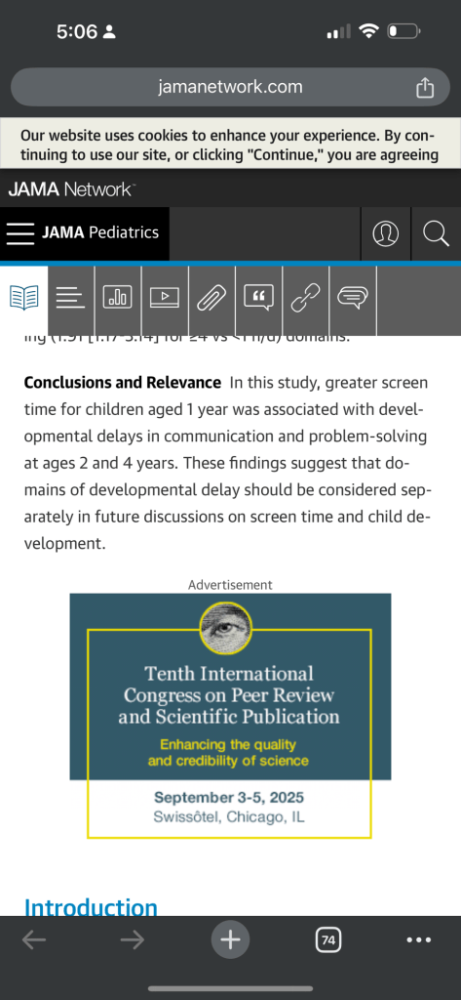
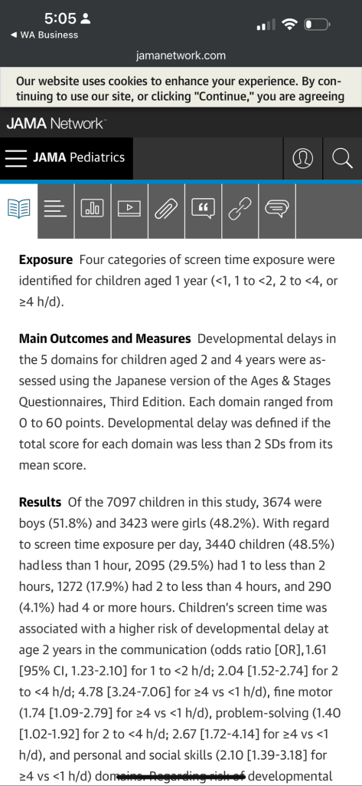

The Race for Adaptation: Monkey vs. Sapiens Baby in the New World
When it comes to operating in a new environment, the monkey and the human baby (“Sapiens baby”) offer fascinating contrasts in speed, adaptability, and learning. These differences reflect millions of years of evolutionary adaptation and distinct survival strategies. Let’s dive into their journey to be “up and running” in a new world.
The Monkey: Fast and Instinct-Driven
Monkeys, as part of the primate family, are remarkably quick to adapt to new environments. Their survival depends on instincts honed over generations and the ability to process threats and opportunities with minimal hesitation.
Speed of Adaptation
A newborn monkey is born with a robust set of instincts and motor skills that enable it to cling to its mother within minutes of birth. This physical readiness gives monkeys a head start in navigating the world around them.
• Physical readiness: Monkeys can move and explore their environment within days or even hours. Their motor development is rapid, allowing them to climb, grasp, and interact with their surroundings.
• Instinctive learning: They rely heavily on inherited behaviors. For instance, a monkey will instinctively avoid dangerous areas or mimic its mother’s actions without needing explicit teaching.
Strengths in a New World
Monkeys excel in environments that require immediate action and physical prowess. Their cognitive skills, while less complex than humans, are sufficient for problem-solving tasks like finding food, recognizing threats, and forming social bonds.
The Sapiens Baby: Slow but Strategic
Human babies, on the other hand, are the epitome of evolutionary trade-offs. Unlike monkeys, their journey to full functionality in the world is slow and deliberate, but their eventual capacity for adaptation and learning is unparalleled.
Speed of Adaptation
At birth, a human baby is highly dependent on caregivers. Unlike monkeys, who can cling to their mothers almost immediately, Sapiens babies require extensive nurturing before achieving mobility or independence.
• Slow physical development: Rolling over, crawling, and walking are milestones that take months to achieve.
• Social and cognitive focus: While their motor skills lag behind, human babies excel in forming emotional bonds and learning through observation and interaction.
Strategic Learning
What human babies lack in speed, they make up for in long-term adaptability:
-
Neuroplasticity: Human brains are remarkably flexible, allowing babies to learn from their environment and adapt to complex challenges.
-
Tool use and innovation: Even as toddlers, humans show an unparalleled ability to manipulate tools and solve problems.
-
Cultural transmission: Sapiens babies learn not just through instincts but from shared knowledge, enabling them to thrive in diverse and dynamic environments.
Monkey vs. Sapiens Baby: Who Wins in the New World?
Aspect Monkey Sapiens Baby
Initial Speed Rapid, almost immediate Slow, takes months to adapt
Physical Readiness Highly developed at birth Underdeveloped at birth
Learning Approach Instinctive and mimetic Observational and innovative
Survival Strategy Quick action, risk avoidance Long-term planning, creativity
Conclusion
If speed and survival in a physically demanding new world are the criteria, the monkey wins hands down. However, for environments that require innovation, problem-solving, and long-term adaptation, the Sapiens baby eventually takes the lead.
This dichotomy is a reminder of the evolutionary paths that shaped these species. Monkeys are built for immediacy, while humans are designed for strategy—a combination that has allowed humanity to not just survive but dominate new worlds.
Reference


Imported from rifaterdemsahin.com · 2025